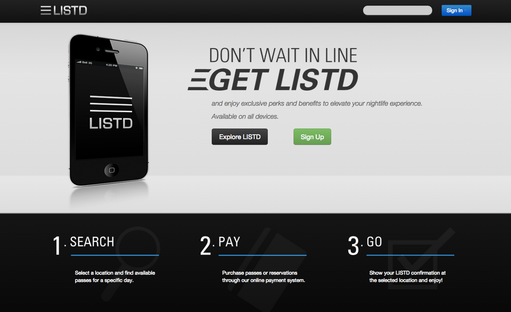
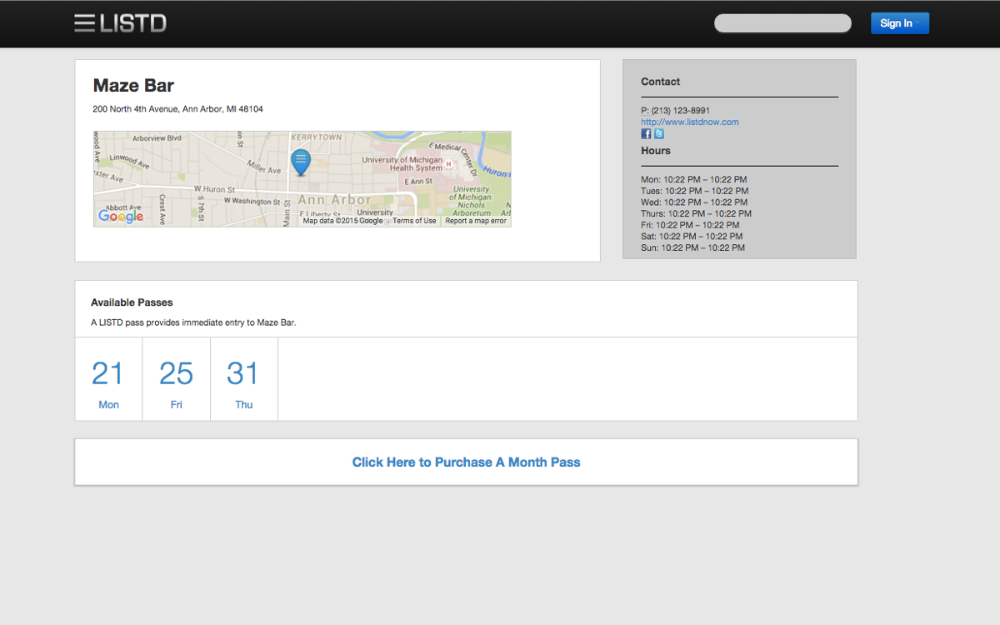
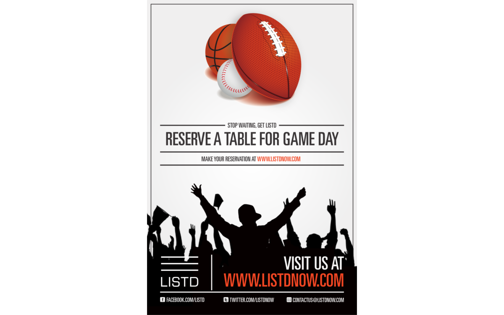

Designed and built LISTD, a ticketing and customer line management service for bars and nightclubs.
Dates: November 2012 - July 2013
Team: Scott Dombkowski, Michael Wang, Dhruv Sekhri, Nina Xu, Steven Chen, and Rohan Kshirsagar
LISTD was a ticketing and customer line management service for bars and nightclubs that I started with a classmate from CMU and a friend who was attending the University of Michigan. The platform was inspired by my previous work with queues and wait times. My team was aware that a number of bars/nightclubs in Ann Arbor, Michigan had extremely long lines. These lines were particularly unbearable during the winter, so much so that students had set up a live-streaming webcam focused on the entrance of one of these nightclubs so that they could see the length of the line at all times.
Our team built a web application and mobile application that allowed bar/nightclub owners to release front of the line passes or table reservations. The passes/reservations would provide direct entry into the establishment without patrons having to deal with the establishment or its promoters. Bars and nightclubs were also provided with individual dashboards to manage the number of passes available, pass prices, and other features to track their queues.
The web application and mobile application allowed users to search or find nearby bars/night clubs that used our service. When a user found a location with passes that they wanted to purchase, they would make the purchase and receive an email with the attached pass. When arriving at the bar/nightclub, a user would show the pass to an employee who would be able to scan the pass to verify its legitimacy. The user would then gain immediate entry into the place of business.
Responsibilities
- Led the development of our web and mobile applications. This included deciding what functionality to develop and determining the priority of that functionality.
- Developed the back-end of the web application.
- Worked with a fellow CMU student on the front-end of the web application.
- Directed our operating processes. This included determining how to validate passes and how to onboard establishments.
LISTD Web Application Map View

LISTD Web Application Home Page

LISTD Web Application Location Page

Example of LISTD Marketing Material